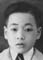

光

深光 名迎林 = 李媚金
Sïm Göng [Ngẽin Lĩm] = Lī mĩ gïm
Shēnguāng [Yínglín] = Lǐ mèi jīn
前
Sēk Gün
Zhuójūn
Tõi Gün
Cáijūn
Fūk Gün
Fújūn
Vòn Gün
Huànjūn
Xēik Gün
Xījūn
Sêl Gün
Zhàojūn
| 148,107,60,25 光 |
深光 名迎林 = 李媚金 Sïm Göng [Ngẽin Lĩm] = Lī mĩ gïm Shēnguāng [Yínglín] = Lǐ mèi jīn |
|||||
|---|---|---|---|---|---|---|
| 149,108,61,26 前 |

灼均 Sēk Gün Zhuójūn |
才均 Tõi Gün Cáijūn |
福均 Fūk Gün Fújūn |
煥均 Vòn Gün Huànjūn |
錫均 Xēik Gün Xījūn |
兆均 Sêl Gün Zhàojūn |
李媚金 Lī Mĩ Gïm (Lǐ Mèijīn) is from 流蓢 (Liúláng） Liulong Village.